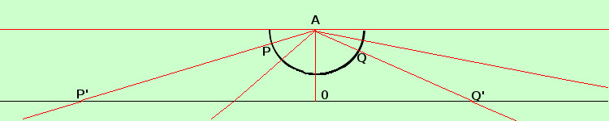

|
sviluppo dimostrate che una semicirconferenza ha lo stesso numero di punti di una retta in ℜ Per dimostrarlo devo porre la semicirconferenza e la retta reale in corrispondenza biunivoca fra loro in modo che ad ogni punto della nsemicirconferenza corrisponda un punto della retta e viceversa Dimostrazione Su un piano traccio la retta dei numeri reali e, in verticale dal punto 0 della retta considero il centro della semicirconferenza di centro A in modo che il suo raggio sia minore della distanza da A dalla retta reale e sia parallelo ad ℜ  se ora considero un fascio di rette con centro nel centro A della semicirconferenza le rette che incontreranno un punto P della semicirconferenza incontreranno anche un punto P' della retta ℜ e, viceversa le rette che incontreranno un punto Q' della retta ℜ incontreranno anche un punto Q della semicirconferenza Quindi abbiamo una corrispondenza biunivoca fra i punti della semicirconferenza segmento e i punti della retta: ad ogni punto della semicirconferenza corrisponde un punto sulla retta e, viceversa, ad ogni punto della retta corrisponde un punto della semicirconferenza; quindi retta e semicirconferenza hanno lo stesso numero di punti Naturalmente avere lo stesso numero di punti nel caso di insiemi infiniti non ha molto significato: ricordati che ∞ e' solo una convenzione Da notare che la retta passante per gli estremi 1 della semicirconferenza e' la parallela alla retta ℜ e possiamo dire che la incontra all'infinito (diremo che due rette parallele hanno in comune un punto all'infinito) Da notare anche che alla parallela corrisponde sia il valore +∞ che il valore ∞ che qui vengono considerati assieme come un unico punto |